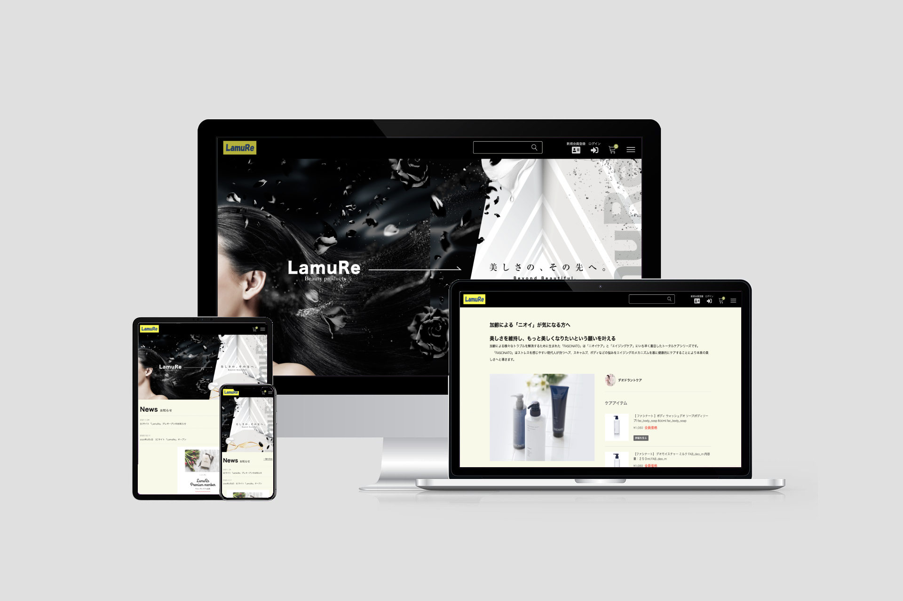
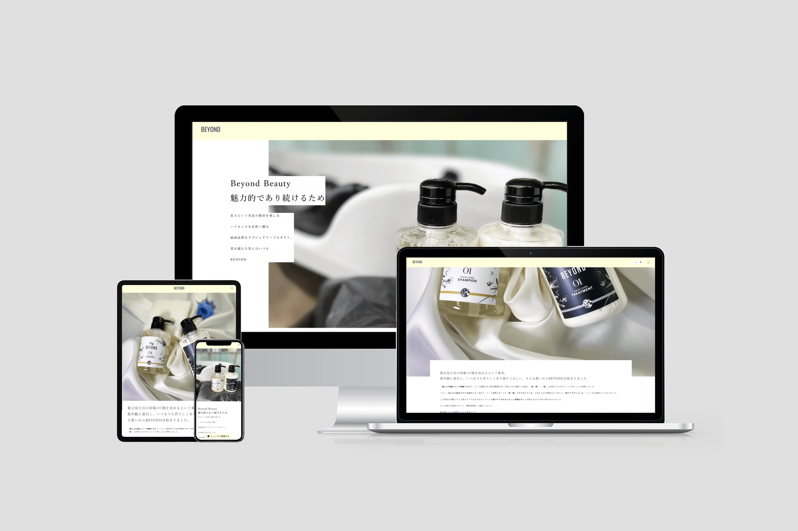
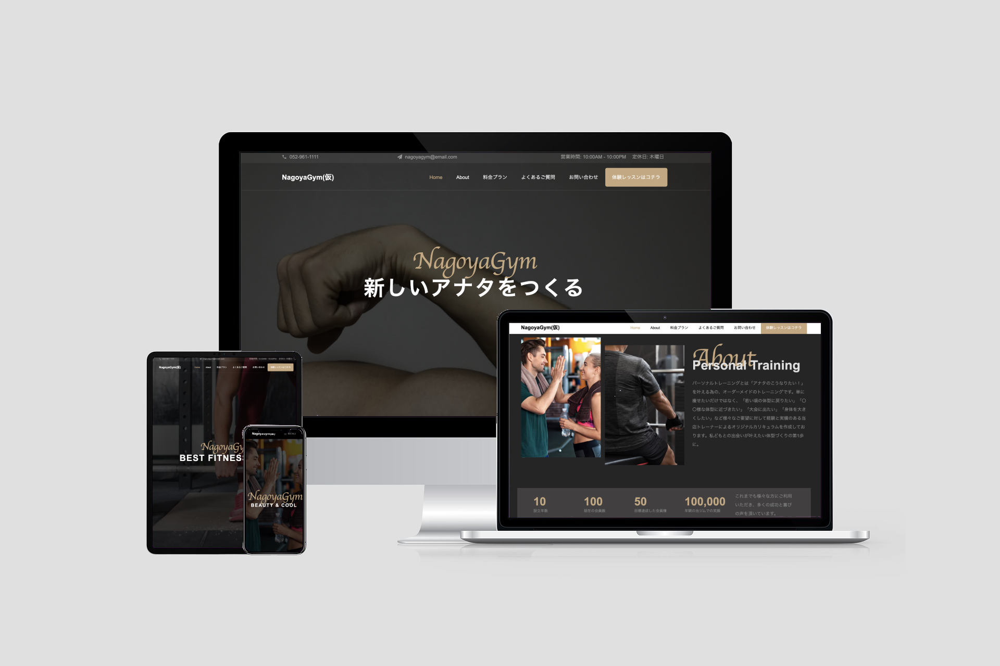
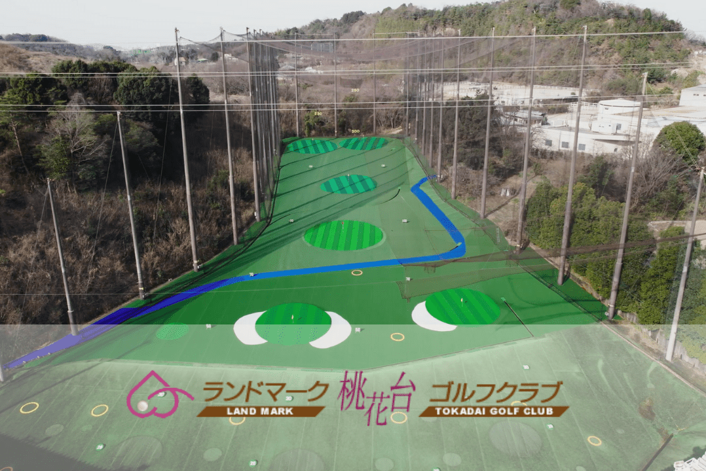
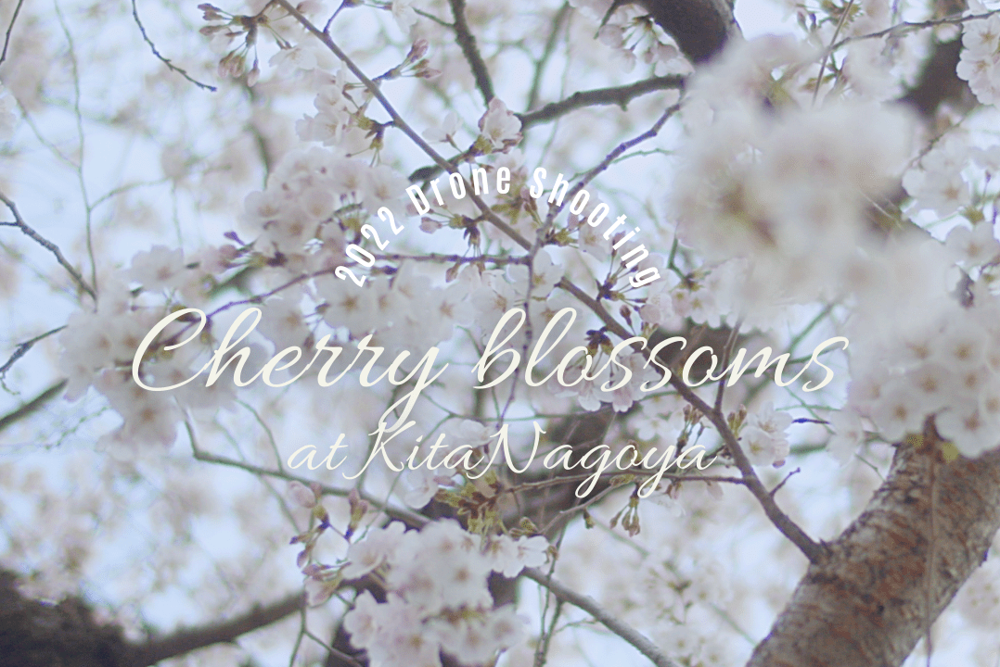
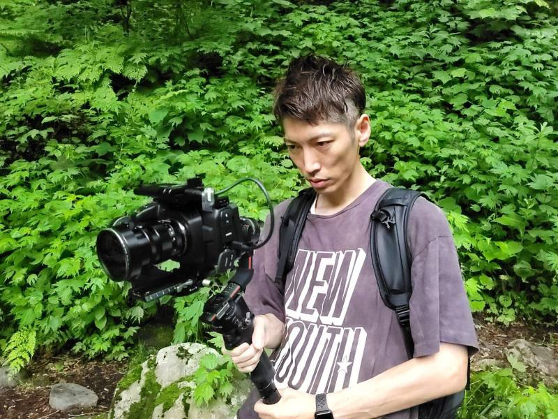

AICHI, JAPAN — WEB DEVELOPER
Web制作・システム開発を軸に、 ドローン・映像まで一気通貫。 つくって終わりではなく、 成果につながる仕組みを。





PLAY MORE
@shogookagawa5084 — YOUTUBE
Web制作・
システム開発を軸に
一気通貫でつくる
愛知県を拠点に、Webサイト制作・システム開発を主軸とするフリーランス。WordPressオリジナルテーマ開発や業務システム構築を中心に、ドローン空撮・動画制作まで一体で対応。「つくって終わり」ではなく、成果につながる仕組みづくりを大切にしています。
GET IN TOUCH